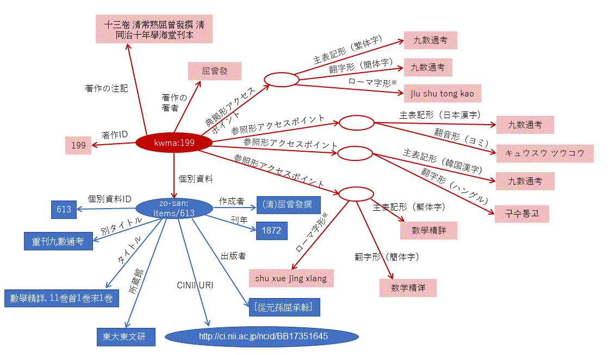

漢籍著作名典拠データベースKWMA-sanのデータをLinked Open Data (LOD)として提供するためのページです。
杜信孚, 王剑编著 同书异名汇录（江苏古籍出版社，2000）を元にしていますが，次の編集・改変・拡張を行っています。
KWMA-san LOD用のメタデータ語彙(プレフィックスはkwma:)と，漢字文化圏の人名や資料タイトルを複数の表記形で表記するためのメタデータ語彙（語彙定義URIはhttp://purl.org/nonroman-representations#,プレフィックスはrep:)を独自に定義しています。
そのほかに，SKOSXL(http://www.w3.org/2008/05/skos-xl#), DCMI Metadata Terms(http://dublincore.org/documents/2012/06/14/dcmi-terms/), DC-NDL(http://ndl.go.jp/dcndl/terms/), FRBR(http://iflastandards.info/ns/fr/frbr/frbrer/)などの語彙を用いています。

全ての著作タイトルの文字列（リテラル）には，IETF言語タグが付きます。
著作を表すリソースのURIは以下のように表現されます。http://purl.org/kwma-san/
著作リソースが持つプロパティを下表に示します。
| プロパティ名 | 説明 | プロパティ値の例 | 備考 |
|---|---|---|---|
kwma:workId |
著作ID | 199 | |
skosxl:prefLabel |
典拠形アクセスポイント | skosxl:literalForm, rep:transliteration, rep:transcription, rep:romanizationのうち1つ以上の値を構造化するため空白ノートをとる。 |
|
skosxl:altLabel |
参照形アクセスポイント | skosxl:literalForm, rep:hasTransliteration, rep:hasTranscription, rep:hasRomanizationのうち1つ以上の値を構造化するため空白ノートをとる。 |
|
skosxl:literalForm |
主表記形 | 九數通考 | 典拠形アクセスポイントの主表記形は必ず繁体字形となる。 |
rep:hasTransliteration |
翻字形 | 九数通考 | 例えば，主表記形が繁体字形だった場合，簡体字形を入力。 |
rep:hasTranscription |
翻音形 | キュウスウ ツウコウ | 例えば，主表記形が日本漢字形だった場合，ヨミ（ワカチをも行う）形を入力。 |
rep:hasRomanization |
ローマ字形 | jiu shu tong kao | 例えば，主表記形が繁体字だった場合，漢語ピンイン（声調記号なし）を入力。 |
kwma:workAuthor |
著作の著者 | 屈曾發 | |
kwma:workNote |
著作の注記 | 十三卷 淸常熟屈曾發撰 淸同治十年學海堂刊本 | 『同书异名汇录』から選定された典拠形アクセスポイントとなった書名に付記されている事項をすべて繁体字で転記。体現形レベルの情報であるが，個別資料リンクの参考となるため採用した。 |
kwma:workContents |
著作の内容 | 内容にかかわる事項を追記するための項目だが，現在は原則として不使用。 | |
kwma:hasItem |
個別資料 | http://purl.org/zo-san/items/613 | 当該著作を具現化する個別資料のリソースURIを示す。 |
個別資料を表すリソースのURIは以下のように表現されます。http://purl.org/zo-san/items/